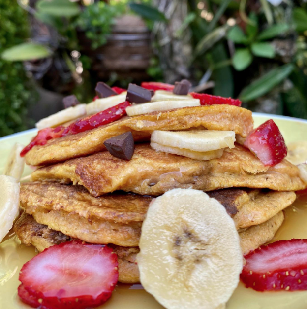

Panqueques de zanahoria
Panqueques de zanahoria

Para hacerlos es muy sencillo, nada más licuamos:
🥞 1/2 taza de avena integral.
🥞 1 huevo.
🥞 1/4 taza de leche descremada.
🥞 1/3 taza de zanahoria rayada.
🥞 1 cdta de polvo de hornear.
🥞 2 cdtas de edulcorante.
🥞 1 tapita de vainilla.
🥞 Opcional 1 cdta de cocoa dulce sin azúcar.
Procedimiento
Luego de licuar todos los ingredientes, se cocinan en un sartén con un poco de aceite en spray y listo.
Dato curioso:
Esta es una excelente manera de comer vegetales en tus comidas, los vegetales nos aportan vitaminas, minerales y fibra, ideal para nuestra salud gastrointestinal.
Ingresá acá para volver al menú principal:
| Menú principal |